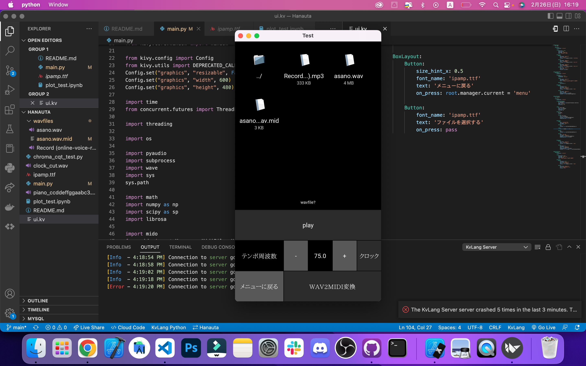
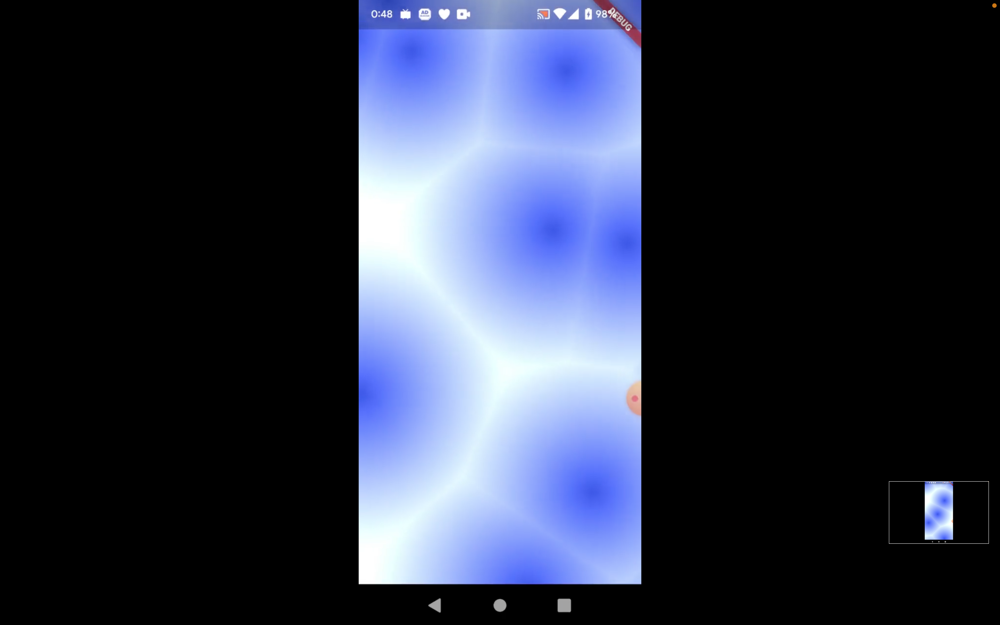
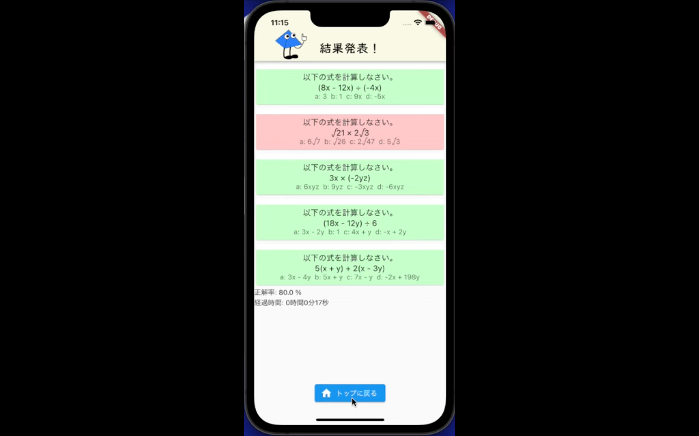
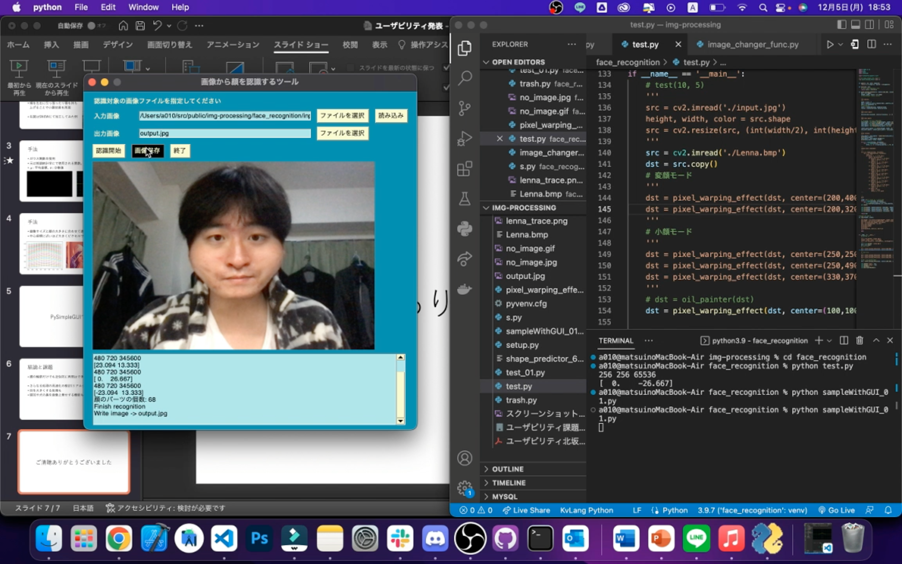
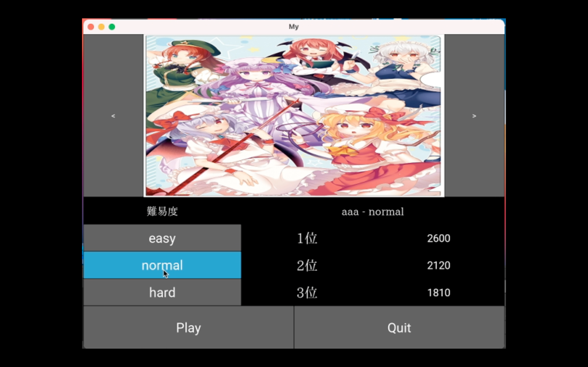
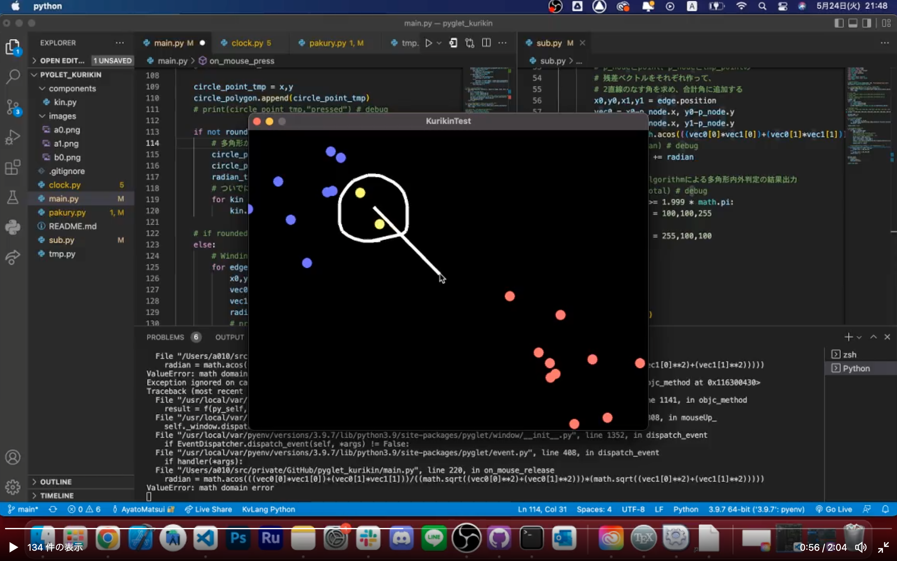
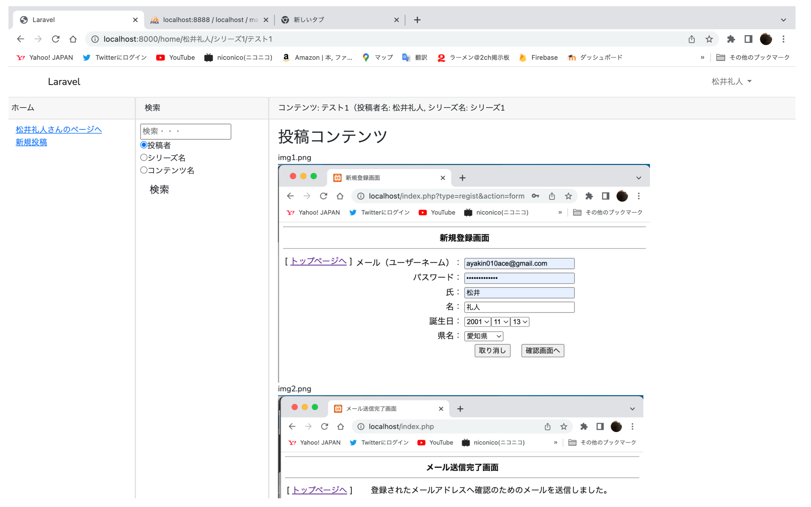
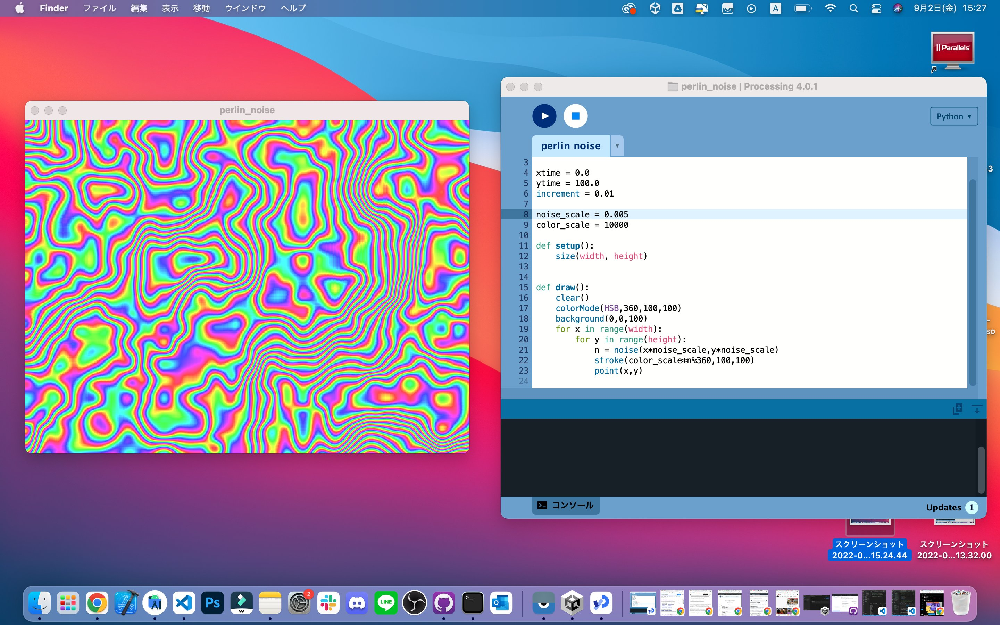
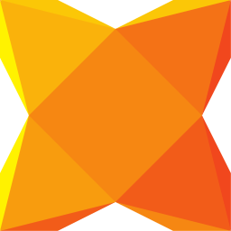
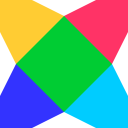

松井のポートフォリオ
松井 礼人 Matsui Ayato
- 名前: 松井礼人
- 生年月日: 2001年11月13日
- 所属大学: 愛知工業大学 情報科学部情報科学科 コンピュータシステム専攻
- 所属部: システム工学研究会
- 所属研究室: 音メディア情報処理研究室
- 趣味: ラーメン巡り, ゲーム鑑賞, 雑談配信
制作物一覧
-

- WAV2MIDIシステム
- 歌を録音してメトロノームの周期を設定するだけでMIDI(楽譜)データが生成できるシステムです。私のように楽器の技能も無く、音感が無い者でも、これを使えばDTMをすることができ、大きなライフハックとなります。これは愛知工業大学の音メディア情報処理研究室にも成果として提出し、研究室配属にて推薦を獲得できました。
- Github Source
Python, Kivy
-

- Shader on Flutter
- Flutter v3.7 アップデートにて追加された、シェーダーをFlutter Materialへ統合する機能を実践しています。今回はThe Book of Shadersにて掲載されているセルラーノイズを実装しました。将来的には、これをglassmorphismの背景に利用して、よりリッチなデザインを目指していくつもりです。
- Twitter Demo Movie
- Github Source
Dart, Flutter
-

- 計算タイムアタックアプリ
- 学校課題にて制作しました。モバイルアプリによる学習支援サービスです。演習画面とスコア画面を用意しており、問題の正答率と経過時間を観測します。作業ログと動作確認している動画は、Scrapboxにて確認することができます。二人組のチームで開発し、私はシステムを、相方にはアセット画像の制作を担当して貰いました。
- Working Log and Demo Movie
- Github Source
Dart, Flutter
-

- SNOWライク顔変形
- 学校課題で制作しました。Dlibと呼ばれる顔認識AIを活用して検出された頬や顎の座標を取得し、ガウス関数をかけてピクセル座標を移動させることで、SNOWの顔加工に近しい機能を実現しました。
- Working Log and Demo Movie
- Github Source
Python, PySimpleGUI
-

- 音ゲーシミュレータ
- 学校課題にて制作しました。選曲画面とプレイ画面、スコア表示画面とあり、SQLiteにてランキングを保存しております。6人組のチームで分散開発をしたプロジェクトとなります。動作内容はPowerPointのスライドや動画にてまとめてあります。
- Demo Movie
- Demo Power Point Slide
- Github Source
Python, Kivy
-

- 多角形内外判定シミュレータ
- 『くりきん ナノアイランドストーリー (Nintendo DS)』と呼ばれるゲームの戦闘システムを再現したものであり、WindingNumberAlgorithmと呼ばれるもので粒子群の閉曲線(多角形)の内外を判定し、その中にいる粒子群のみを操作します。動作内容はTwitterにて動画で公開し、これにも多くの賛同を受けました。
- Twitter Demo Movie
- Github Source
Python, Pyglet
-

- 簡易漫画サイト
- 学校課題にて制作しました。投稿画面, 投稿作品一覧画面, 作品閲覧画面とあり、詳細は以下のZipソースに内包されているPDFドキュメントにて仕様を確認することができます。
- Zip Document
LAMP, Laravel/ui
-

- Perlin Noise like NGOD
- 『NEEDY GIRL OVERDOSE (Steam Game)』の「Rainbow Girl」エンドにて使用されている虹色のエフェクトを見て、そこに数学(幾何学)的な法則を見出し、それをヒントにPerlin Noiseを発見しました。実装内容はTwitterに公開しています。実際には恐らくこれとは違う勾配関数が使われていることが窺えますが、ゲームから数式を発見した意味で非常良い体験をしました。
- Twitter Demo Image and Source Code
Python, Kivy
開発経験のある言語
-

- Python
- 画像処理や音楽情報処理に機械学習等の数値計算から、Webバックエンドまで幅広くして大いに活用しています。また、家庭教師のバイトとしてのプログラミング教育にも、この言語を活用しました。Google Colabによる開発も大変便利であり、研究や業務効率化において必要不可欠となっています。
☆☆☆☆☆
-

- Dart
- 主にFlutterのための言語として扱っていますが、言語単体としても大変魅力的です。インタプリタを使用できる点やパッケージ管理の容易さ、公式文献の読みやすさを筆頭に、関数型とオブジェクト指向の併用性、Null許容、JSON直列化/逆直列化、非同期処理、多重継承(Mix-in)等が挙げられます。特に多重継承はゲーム開発においてUnity(C#)に無い特性であるため、大いに可能性を期待しています。
☆☆☆☆☆
-

- C#
- オブジェクト指向の基本となる言語の一つであり、Unityや.NET MAUI等の開発ツールにも活用されているため、需要は大きいです。しかしながら、その多層構造なVMによるビルドの所要時間や、Visual Studioでの開発を強いられること、また、近年2Dゲーム開発は他のエンジンも優秀になってきているため、Dart等の他の言語への移行を検討しています。
☆☆☆
-

- TypeScript
- 近年のWeb開発ではNext.jsが注目されており、そのための言語として現在勉強しております。JavaScriptとの互換性が高く、スクリプト言語ユーザとして非常に可読性が高いです。
☆
-

- Haxe
- Javaライクな言語の一つで、関数型とオブジェクト指向の性質を併せ持ち、可読性が高いことが特徴です。HaxeFlixelと呼ばれるゲームエンジンに使われていることに加え、CやPythonやJavaScript等の様々な言語にトランスパイルできる等の特異な性質を持っています。
☆☆☆
-

- Solidity
- 一時期ブロックチェーン/NFTの技術に注目しており、CryptoZombieと呼ばれる学習プラットフォームにて独学しておりました。現在はFirebaseの学習のため、一時中断しております。Pythonを使ったバックエンドシステムとの開発の相性を期待しております。
☆
-

- C
- 授業にて扱いました。初めてのプログラミングで活用した言語でありますが、現状は他の言語での開発に勤しんでいます。
☆☆
-

- Java
- 授業にて扱いました。オブジェクト指向の礎となる言語でありますが、Cと同様にコンパイラが諸々存在している不便さや、VScodeでは扱いにくい点、(特にAndroid開発において)バージョンの整備の行き届いてなさ等があり、現状は他の言語での開発に勤しんでいます。
☆☆
-

- PHP
- 授業にて扱いました。HTMLにインターリーブできることが魅力でありますが、かえってそれが不便と化す場合もある他、Laravelを扱う際に動的型付けが不便になったり、その他記法に独特のクセが見られる等、個人的に開発体験はあまりよくありませんでした。
☆☆
開発経験のあるフレームワーク, ゲームエンジン, XaaS
-

- Flutter (Dart)
- モバイル開発のためのクロスプラットフォームとして、UIやOSを制御するための機能が充実しています。Riverpodによるソフトウェア制御やFirebaseとの連携、Flame(ゲームエンジン)の活用等があります。2022年以降はデスクトップへの対応も拡大し、v3.7以降ではGLSLによるデザイン向上に注目を浴びています。私が現在最も注力して開発しているフレームワークです。
☆☆☆☆☆
-

- FastAPI (Python)
- 2022年初頭に注目を浴びたWebフレームワークであり、Flaskライクな記法とGin並の高速処理が魅力的です。Swagger UIによる動的解析も非常に優秀です。小規模なWebアプリ制作も可能ですが、FlutterやNext.js等のフロントエンドと連携して、複雑な数値計算を代行するためのサーバとして活用することに可能性を見出しています。
☆☆☆☆☆
-

- Firebase (mBaaS)
- 認証やFirestore(NoSQL)、Cloud Storage等のGCPの機能を統合して簡易的に扱えるmBaaSであり、コンソール画面からアクセス履歴や料金を確認することが可能で、非常に快適にサーバーサイドシステムを実現することが可能です。一つのプロジェクトに複数のフレームワークを紐付けてスケールアップを目指すことが可能である他、StripeやAlgolia等との連携も大きな魅力です。
☆☆☆☆
-

- Next.js (TypeScript)
- フロントエンド用のWebフレームワークとして注目を浴びており、私は現在Flutterと並んで開発に注力しております。個人開発ではFirebaseやFastAPI等と連携することを目標にしています。
☆☆
-

- Unity (C#)
- 優秀な3Dレンダリングエンジンと共にGUIを使った開発ができる意味で、大変魅力的なツールではありますが、その処理の重さと検証の不便さが目立ち、現在は開発を断念しています。今後の2Dゲームの開発にはFlutter FlameやHaxeFlixelを選定予定ですが、XRを含めた3Dコンテンツの制作にはUnityが必要不可欠であり、今後も需要は考えられそうです。
☆☆
-

- .NET MAUI (C#)
- Flutterに対抗したデスクトップまたはモバイル用のクロスプラットフォームな位置づけになります。C# Markupと組み合わせることで、よりFlutterライクなデザイン設計が可能となりますが、少なくともモバイル開発における機能面としてはFlutterに劣るものが感じられる他、デスクトップ開発においても、最近はFlutterでFirebaseと連携可能であるため(非公式)、現在は開発を断念しています。
☆☆
-

- Laravel (PHP)
- 授業にて扱いました。SQLと密接したWebバックエンドフレームワークの一つであり、現在最も人気が高いです。MVCによるソフトウェア制御が洗練されていますが、PHPの動的型付けな言語の性質により、オブジェクト指向を適用した場合に変数の参照関係が不明になる点があり、個人的な所感ではりますが、総合的な開発体験としてはあまり良いものとは感じられませんでした。
☆☆☆
-

- HaxeFlixel (Haxe)
- Pygletで開発した群衆シミュレータは、元々このゲームエンジンにて開発する予定でしたが、PolygonSpriteの描画にて解決の難しいバグが発生したため、断念しました。機能自体はUnityやFlutter Flameに次いで充実しており、プライベートでの開発には是非とも視野に入れたいゲームエンジンの一つです。
☆☆☆
-

- Processing.py (Python)
- ゲームデザインへ興味が湧いたため、ほんの少しだけ触りました。Perlin Noiseが簡単に扱えることが魅力ですが、しかしProcessing.pyにおいては、Numpy等の外部パッケージを導入することが簡単でないため、現状は断念しています。また、GLSLやWebGL等に現在は注目しており、それによるデザイン開発を現在は視野に入れています。
☆☆